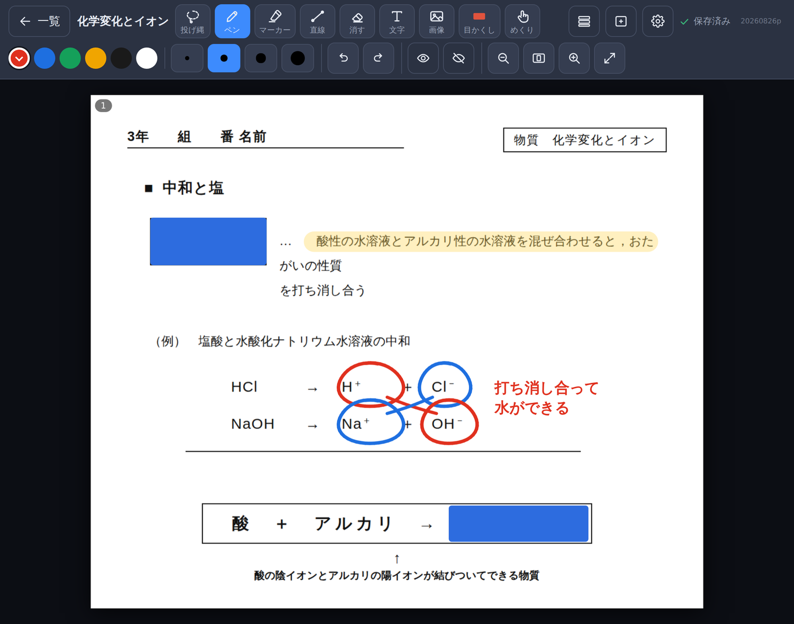

インストール不要Chrome・Edge で動作タッチペン対応
配付プリントに、
そのまま書き込む。
プリントの PDF や画像を電子黒板・プロジェクタに映して、タッチペンでそのまま書き込める授業用ノートです。
ソフトのインストールは要りません。Chrome か Edge で URL をひらくだけ。
書いた内容は自動で保存され、次の授業は続きから始められます。
インストール不要 URL をひらくだけ
書けば自動で保存 保存ボタンはありません。書いた先からファイルになります
オフラインでも動く 一度ひらけば、ネットが不安定でも起動

配付プリントに書き込んだところ。書いた内容は自動で保存されます
授業で、こう使えます
映して、書いて、解説する
プリントの PDF をそのまま投影。ペンで線を引き、ピンチで拡大して細かい図も見せられます。
答えをかくして、問いかける
答えの上に「目かくし」をかぶせておき、授業中は「めくり」でタッチ。考えさせてから正解を開けます。
書き込みごと PDF で配る
必要なページを選んで、書き込み・目かくしごと 1 つの PDF に書き出せます。欠席者の補習や板書の記録に。
できること
ペン・直線で書き込み
色も太さ（0.1〜2.0mm）も自由に。押さえたままで図形がきれいに整います。
マーカーで強調
蛍光ペンのように重要語句へ。手書きや文字の下に入ります。
文字を入れる
キーボードで入力。縦書き・太字、背景を白にして下の印刷を隠すこともできます。
写真を置く
写真を選ぶ／カメラで撮って配置。大きさ・位置は指でも直せます。
投げ縄でまとめて編集
囲んで移動・拡大縮小・色変更・複製。別のページにも貼れます。
目かくし／めくり
赤シートのように答えを隠し、授業中はタッチで開閉。
全画面表示
メニューを隠して画面いっぱいに。そのまま書き込めます。
ページ一覧
サムネイルで並べ替え・削除・コピー。白紙やPDFの追加もここから。
PDF 書き出し
選んだページを、書き込みごと 1 つの PDF に保存。
フォルダで整理
学年・単元ごとに階層分け。検索もできます。
自動保存・続きから
書くたびに保存。開くと前回のページから始まります。
道具 — 数字キー 1〜9 でも切り替えられます
はじめかた — 最初の設定は 1 回だけ。2 回目からは、ひらいてすぐ使えます
1
ひらく
Chrome または Edge で下の URL をひらき、ブックマークしておきます。初回に一度ひらけば、次からはネットが無くても起動します。
2
データフォルダを選ぶ
「データフォルダを選ぶ」を押し、ドキュメントの中などに「PDFノート」フォルダを作って選びます。次回からは「前回のフォルダを使う」→「編集を許可」を押すだけです。
3
ノートをつくる
「＋ 新規ノート」で名前と入れるフォルダを選び、「ページ追加」からプリントのPDFや画像を取り込みます。
PDFノート
配布 URL
https://edu-tools-jp.github.io/pdfnote/
ひらいたら、アドレスバー右の「インストール」を押してアプリとして入れておくことをおすすめします。デスクトップのアイコンから開けて、画面いっぱいに映せます。
指とペンの操作 — ここだけ覚えてください
タッチペン
書き込み（ペン・マーカー・直線・消す・目かくし）
1本指で動かす
上下にスクロール（指では線を引きません）
はじめは、書き込めるのはタッチペンだけです。手をついても線が引かれず、1 本指でスクロールできます。タッチペンを使わないときは、上のバーの ⚙ 設定 から 「指だけで操作できるようにする」 をオンにしてください（そのときのスクロールは 2 本指になります）。なお 「文字」 のときだけは、指でもテキストボックスを作れます（このときのスクロールは 2 本指）。
保存とバックアップ
ノートは、選んだフォルダの中にファイルとして保存されます。
ドキュメントの中などに「PDFノート」フォルダを作って、保存先とすることをおすすめします。
ドキュメント/PDFノート/
├── index.json … 全ノートの目次
└── notebooks/
└── <ノートID>/
├── notebook.json … 書き込み
├── thumb.png … サムネイル
└── assets/ … PDF・画像
バックアップのおすすめ：
データがなくなるリスクを避けるため、定期的に Google ドライブ等にバックアップをとることをお勧めします。
「PDFノート」フォルダごとコピーすれば、それがそのままバックアップになります。
更新と、困ったとき
新しい機能が追加されると、ノート一覧の右上の 「更新」ボタンが緑色に光ります。
押すだけで最新版になります（書いたノートはそのまま残ります）。
- Q保存できない／フォルダの許可が出ない
- Chrome・Edge 以外のブラウザでは動きません。上の URL からひらき直してください。
- Q毎回フォルダを選び直しになる
- ブラウザの閲覧データを消すと記憶も消えます。選び直せば大丈夫です。中のノートは消えていません。
- Qまちがえて消してしまった
- 書き込みは上のバーの 「もどす」 で戻せますが、ノートやページの削除は元に戻せません。
まずは 1 単元ぶんのプリントで、試してみてください。
うまくいかないところ、ご要望があれば、ぜひお聞かせください。